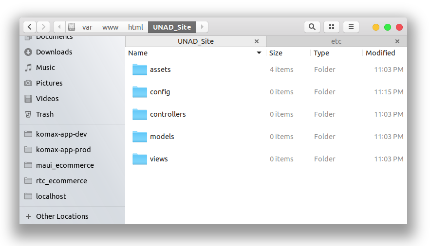
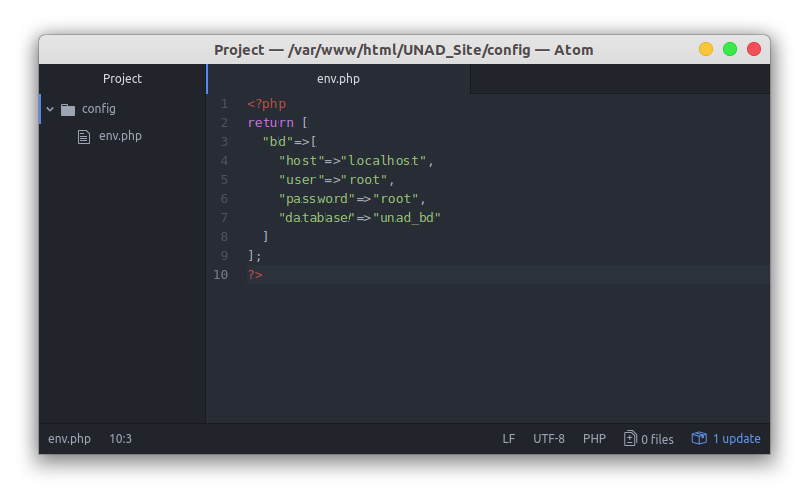

Ya llega la hora de hacer la ramificación de archivos y carpetas, por lo cual usaremos el estilo de arquitectura MVC (Modelo Vista Controlador), puesto que tiene un control y permite al software ser de fácil actualización o modificación en un futuro, separando los datos, la interfaz de usuario y la lógica del mismo.
Para ello comenzaremos accediendo a la carpeta htdocs (Windows [Normalmente se encuentra en C:/xampp]) o bien en html (Linux [Normalmente se encuentra en /var/www]) y ahí crearemos nuestra carpeta de proyecto, la cual en este caso llamaremos "UNAD_Site"; a su vez dentro de este crearemos las carpetas:
- assets
- css
- fonts
- images
- js
- config
- models
- views
- controllers

Teniendo creadas las carpetas donde irían nuestros archivos, procederemos a crear nuestro archivo de ambiente que va a poseer nuestros accesos a la base de datos, el cual llamaremos "env.php" en la carpeta config, dentro de este crearemos un array retornado para luego llamar al archivo "env.php" y pasarle nuestra info a alguna variable, por lo cual nuestro contenido sería:

Con esto habremos terminado nuestra ramificación y creación de archivo de configuración de ambiente.